F5 Identity and Access Management Solutions > 200 Series: Assisted Deployment Use Cases Source | Edit on
Lab 1: Azure AD Easy Button integration¶
Warning
For any remark or mistake in this lab, please send a Teams chat to Matthieu DIERICK.
In this lab, you will learn how to connect APM to Azure AD as IDaaS. Since v15.1, you can enable APM as SAML SP and Azure AD as SAML IDP. In this lab, we will use the new Easy Button Guided Configuration template. This template:
- Publish on-prems apps
- Enable Single Sign on
- Interconnect (SAML binding) APM with Azure AD tenant
Note
You will notice we will never connect to Azure AD interface. APM will use Microsoft Graph API to configure AAD tenant accordingly.
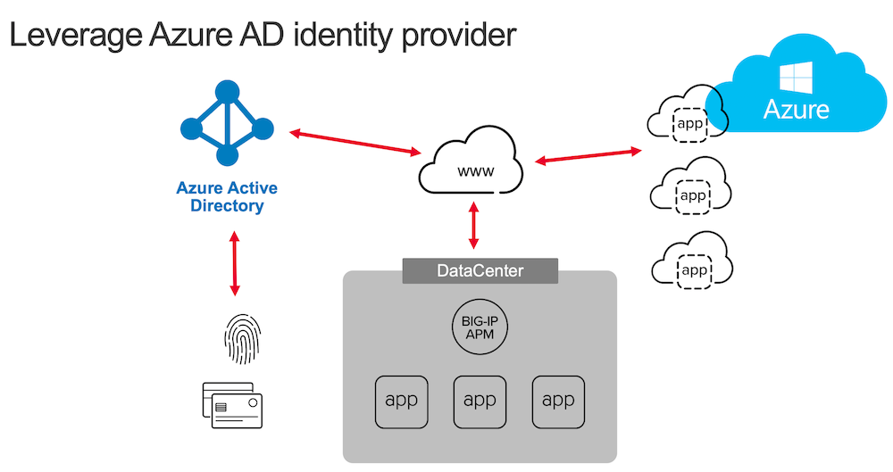
In the video below, you can see the use case. This is not the lab video, it is the public facing use case demo.
Section 1.1 - Check the Lab Architecture¶
In this lab, we will protect 3 apps:
2 internal apps
VanillaApplication hosted in IISSkyblueApplication hosted in IIS
1 cloud app hosted in Azure cloud
Wordpress-UDFhosted in Azure cloud

Architecture of Internal Apps¶
Bluesky application¶
This application resides on-prems in IIS server. Its FQDN is https://bluesky.f5access.onmicrosoft.com
This application is not authenticated, meaning there is no Single Sign on required in front of this app.
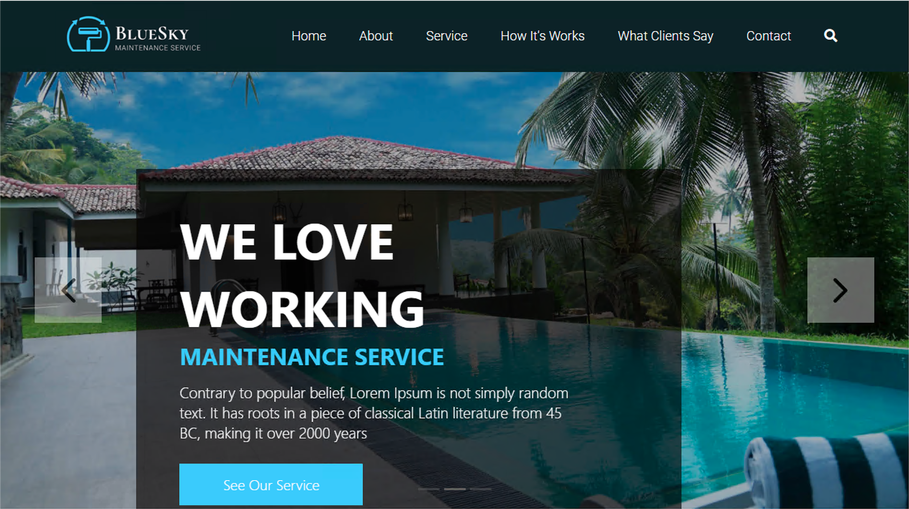
Vanilla application¶
This application resides on-prems in IIS server. Its FQDN is https://vanilla.f5access.onmicrosoft.com
This application is authenticated by Kerberos. So a Signle Sign On will be required to connect to this app.
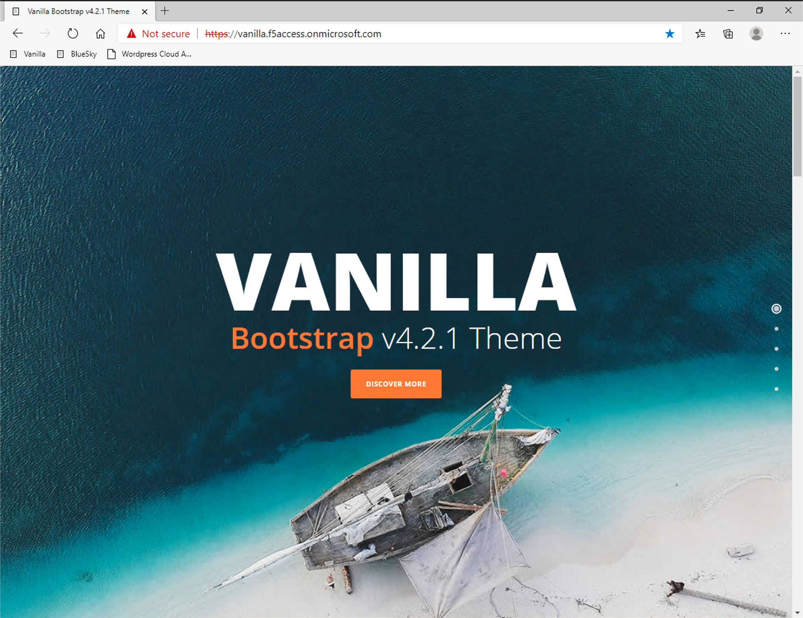
Task 1 - Check IIS configuration¶
RDP to IIS with
f5access\useras user, anduseras passwordClick
IIS managericon in the taskbar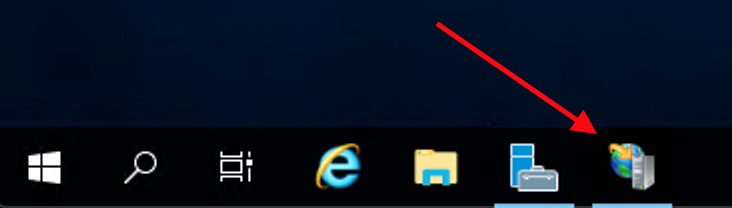
In the Connections tree, click on
vanillaandAuthentication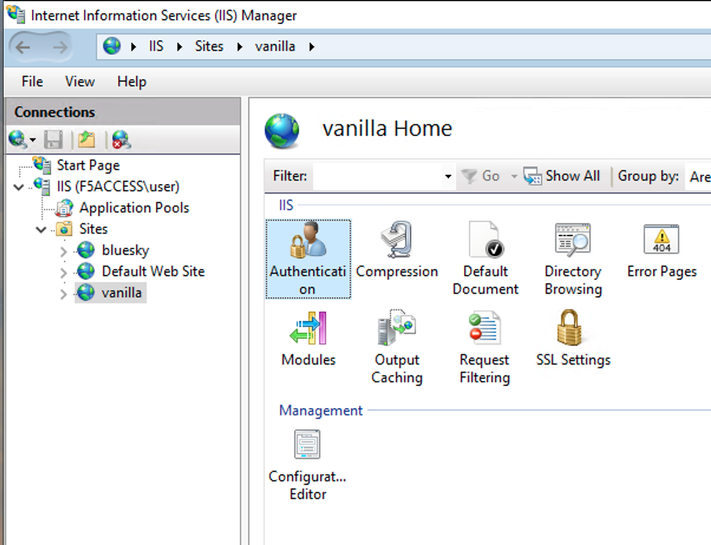
You can notice
Anonymous Authis Disabled andWindows Authenticationis Enabled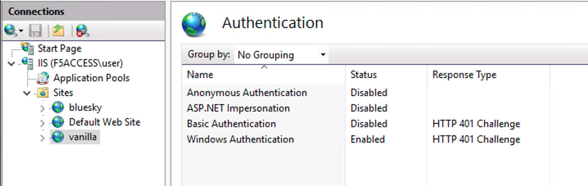
Note
In the next class we will configure APM to publish, protect and SSO to internal apps.
Architecture of Cloud App¶
Note
In this use case, we don’t cover only internal, sensitive or legacy applications. In a real world, customers have applications on-prems and in the public cloud.
Note
A Wordpress application is already up and running in Azure Cloud at this address https://wordpress-apm-aad.azurewebsites.net/

This Wordpress application is an Azure App Service.

This App Service is already bound with our demo Azure AD tenant.

Warning
It is important to note this application is not tied to APM. APM only publishes and protects on-prems apps. All other cloud and SaaS apps are directly connected to Azure AD.
Section 1.2 - Deploy APM to protect Bluesky App¶
In this section, we will publish the Bluesky application hosted on-prems.
Task 1 - Publish and protect Bluesky app¶
Let’s start with Bluesky application. Reminder, Bluesky does not have any Authentication enabled.
- Connect to BIG-IP HTTPS user interface from UDF as
adminand passwordadmin - In
Access>Guided Configuration, selectMicrosoft Integration>Azure AD application
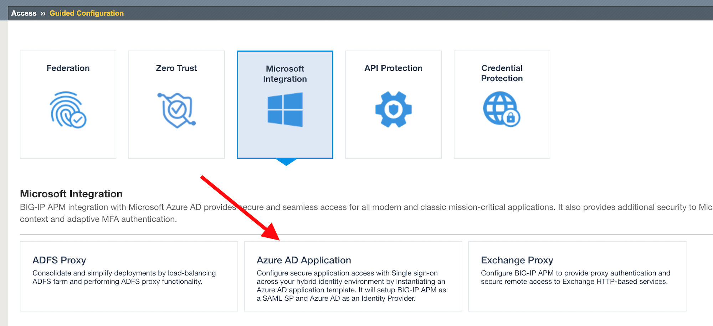
Task 2 - Configuration Properties¶
Click
Nextand start the configurationConfigure the page as below
Configuration Name :
IIS-Bluesky-<My Name>Why my name ? Because this app will be created in Azure AD tenant. And we need to differentiate all apps. Example :IIS-Bluesky-MattIn
Azure Service Account Details, SelectCopy Account Info form Existing Configuration, and selectIIS-baseline, then clickCopy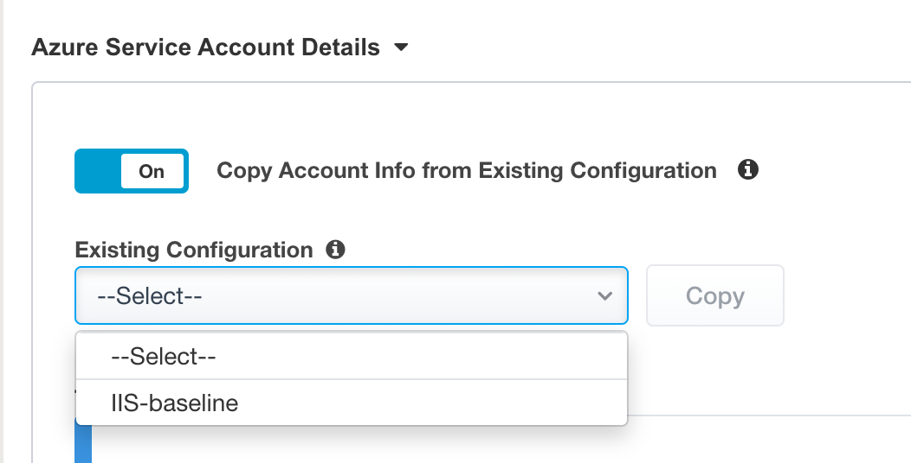
Note
In a real world, you will set here the values from the Azure Service Application created for APM. You have to create an Azure Application so that APM gets access to Microsoft Graph API. But for security concerns, I can’t show in this lab the application secret.
Note
The steps to create this Azure applications are below
- In Azure AD, create a service application under your organization’s tenant directory using App Registration.
- Register the App as Azure AD only single-tenant.
- Request permissions for Microsoft Graph APIs and assign the following permissions to the application:
- Application.ReadWrite.All
- Application.ReadWrite.OwnedBy
- Directory.Read.All
- Group.Read.All
- Policy.Read.All
- Policy.ReadWrite.ApplicationConfiguration
- User.Read.All
- Grant admin consent for your organization’s directory.
- Copy the Client ID, Client Secret, and Tenant ID and add them to the Azure AD Application configuration.
Click
Test Connectionbutton –> Connection is valid
- Click
Next
Task 3 - Service Provider¶
Configure the page as below
Host
bluesky.f5access.onmicrosoft.comEntity ID is auto-filled
https://bluesky.f5access.onmicrosoft.com/IIS-Bluesky-my name>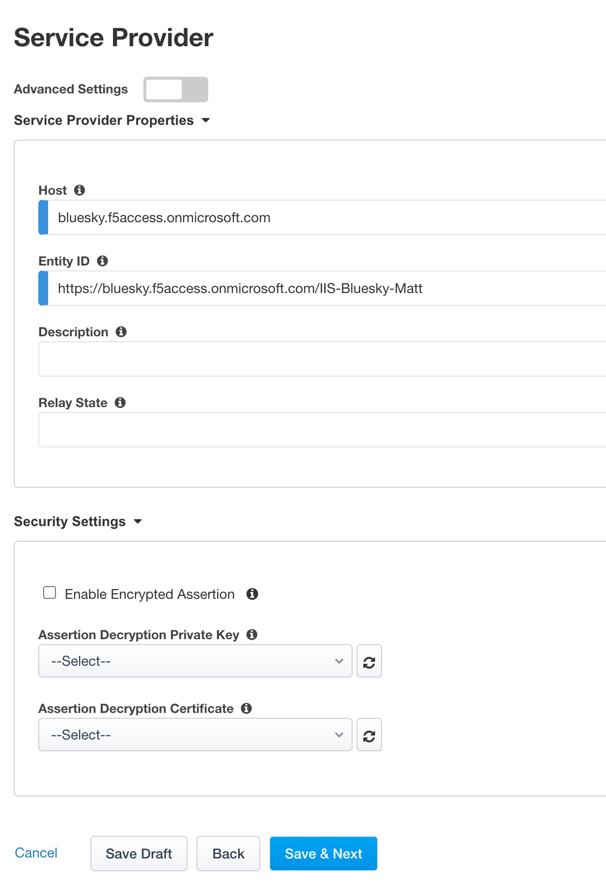
Click
Save & Next
Task 4 - Azure Active Directory¶
Select
Azure BIG-IP APM Azure AD...templateNote
As you can notice, there are several templates available for different applications. Here, in this lab, we will publish a generic app. So we select the first template.
Click
AddIn the new screen, configure as below
Signing Key :
default.keySigning Certificate :
default.crtSigning Key Passphrase :
F5twister$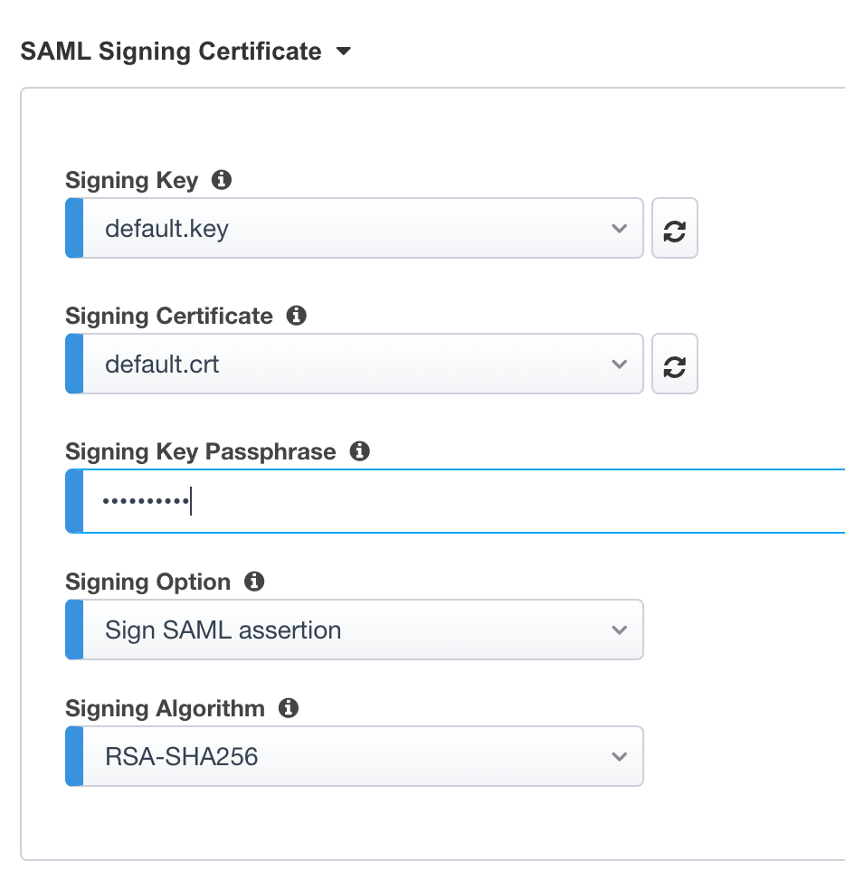
In
User And User Groups, clickAddNote
We have to assign Azure AD users/group to this app, so that they can be allowed to connect to it.
In the list, click
Addfor the useruser1. If you can’t find it, search for it in thesearchfield.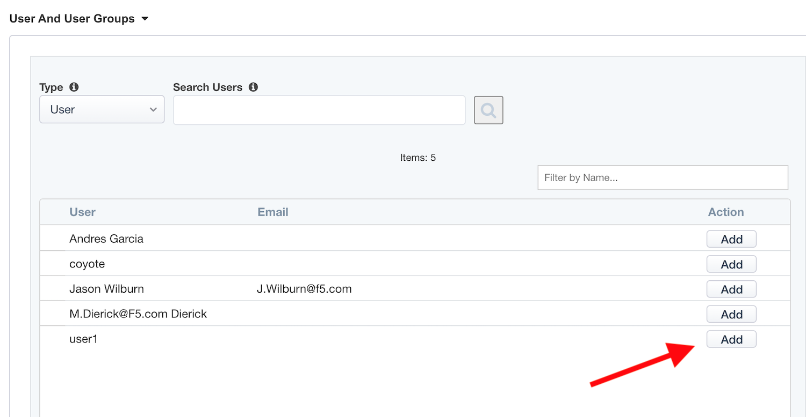
Click
CloseYou can see
user1in the list.
Click
Save & Next
Task 5 - Virtual Server Properties¶
Configure the VS as below
IP address :
10.1.10.104ClientSSLprofile. We will get a TLS warning in the browser, but it does not matter for this lab.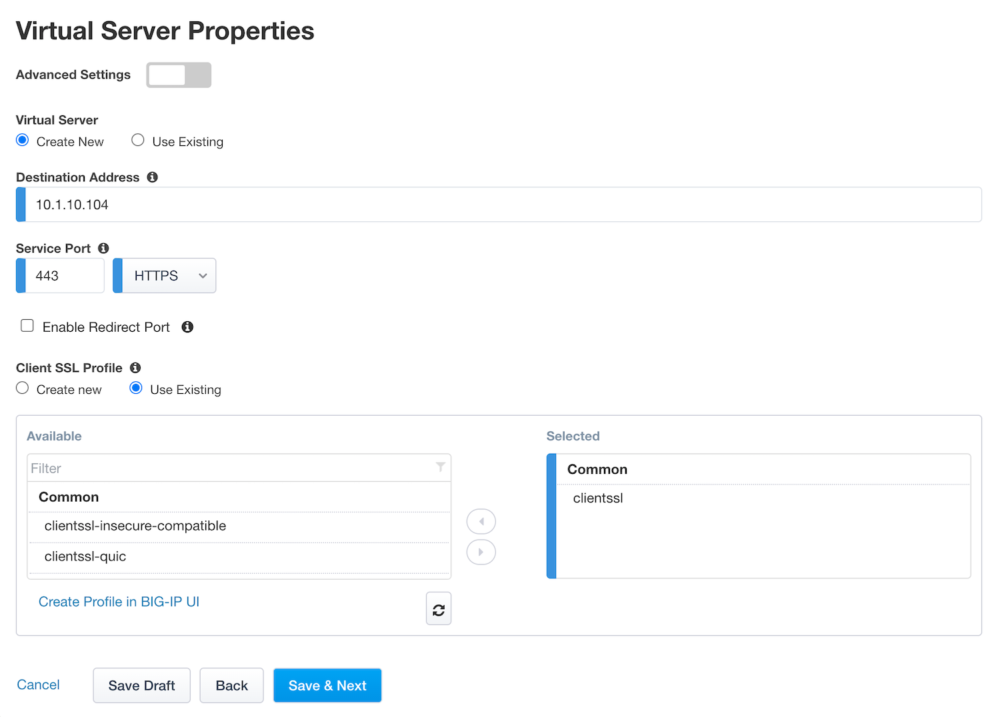
Click
Save & Next
Task 6 - Pool Properties¶
Select
Create NewIn Pool Servers, select
/Common/10.1.20.9This is the IIS server.
Task 7 - Session Management Properties¶
- Nothing to change, click
Save & Next
Task 8 - Deploy your app template¶
Click
Deploy
Behind the scene, the deployment creates an
Azure Enterprise ApplicationforBluesky. We can see it inAzure portal(you don’t have access in this lab). With this Enterprise Application, Azure knows where to redirect the user when authenticated. And this app has the certificate and key used to sign the SAML assertion.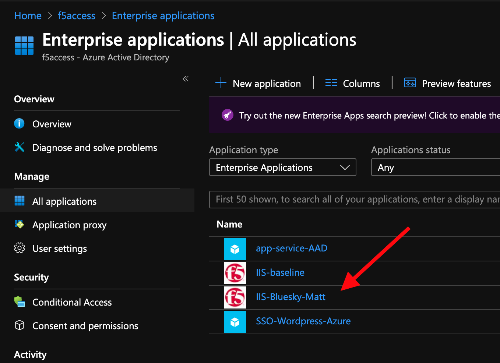
Task 9 - Test your deployment¶
RDP to Win10 machine as
userand passworduserOpen
Microsoft Edgebrowser - icon is on the DesktopClick on the
bookmarkBlueskyYou will be redirected to Azure AD login page. Login as
user1@f5access.onmicrosoft.com, and for the password please ask to the instructor.Warning
Don’t reset or change the password so that all students can use it.

You are redirected to APM with a SAML assertion, and can access to Bluesky application
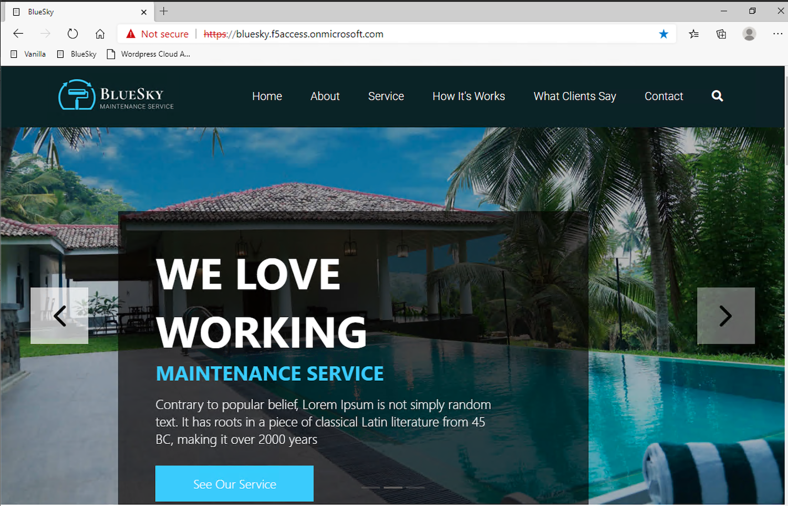
Section 1.3 - Deploy APM to protect the Vanilla App¶
In this section, we will publish the Vanilla application hosted on-prems.
Task 1 - Publish and protect Vanilla app¶
Let’s continue with Vanilla application. Reminder, Vanilla application as Authentication enabled with Kerberos auth. So, we will need to enable Kerberos Constrained Delegation.
Connect to BIG-IP HTTPS user interface from UDF as
adminand passwordadminIn
Access>Guided Configuration, selectMicrosoft Integration>Azure AD applicationNote
As you can notice, we deploy one template per application
Task 2 - Configuration Properties¶
Click
Nextand start the configurationConfigure the page as below
Configuration Name :
IIS-Vanilla-<My Name>Why my name ? Because this app will be created in Azure AD tenant. And we need to differentiate all apps.Enable
Single Sign-on (SSO)
In
Azure Service Account Details, SelectCopy Account Info form Existing Configuration, and selectIIS-baseline, then clickCopy
Note
In a real world, you will set here the values from the Azure Service Application created for APM. You have to create an Azure Application so that APM get access to Microsoft Graph API. But for security concerns, I can’t show in this lab the application secret.
Note
The steps to create this Azure applications are below
- In Azure AD, create a service application under your organization’s tenant directory using App Registration.
- Register the App as Azure AD only single-tenant.
- Request permissions for Microsoft Graph APIs and assign the following permissions to the application:
- Application.ReadWrite.All
- Application.ReadWrite.OwnedBy
- Directory.Read.All
- Group.Read.All
- Policy.Read.All
- Policy.ReadWrite.ApplicationConfiguration
- User.Read.All
- Grant admin consent for your organization’s directory.
- Copy the Client ID, Client Secret, and Tenant ID and add them to the Azure AD Application configuration.
Click
Test Connectionbutton –> Connection is valid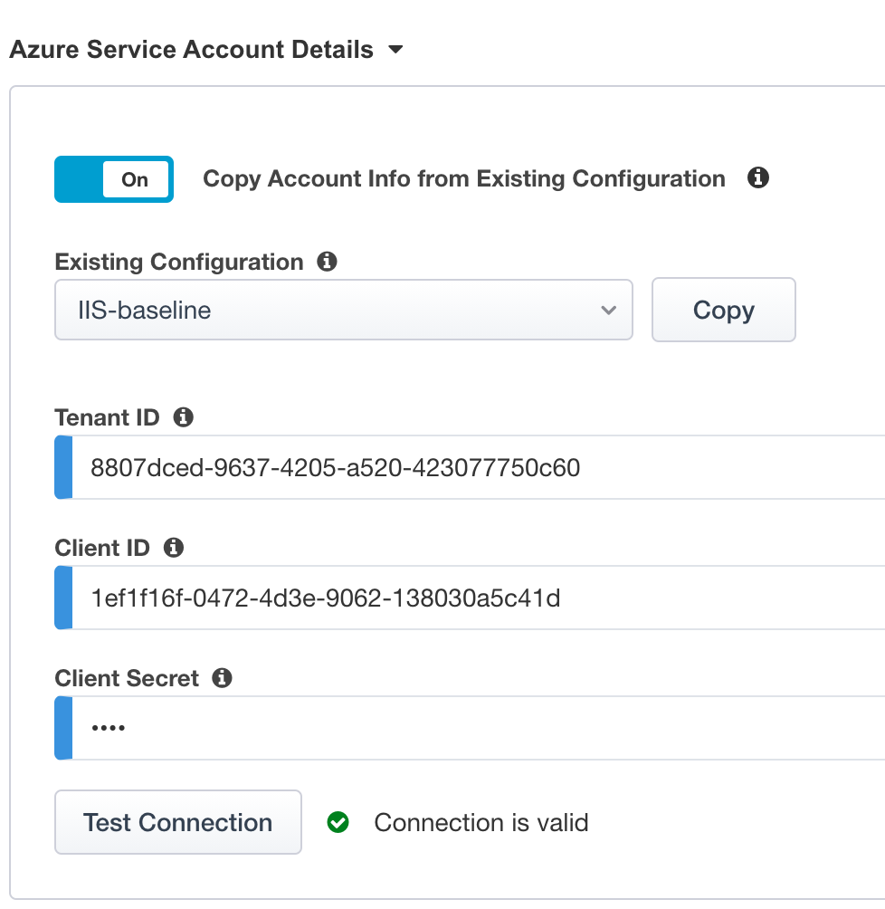
Click Next
Task 3 - Service Provider¶
Configure the page as below
Host
vanilla.f5access.onmicrosoft.comEntity ID is auto-filled
https://vanilla.f5access.onmicrosoft.com/IIS-Bluesky-my name>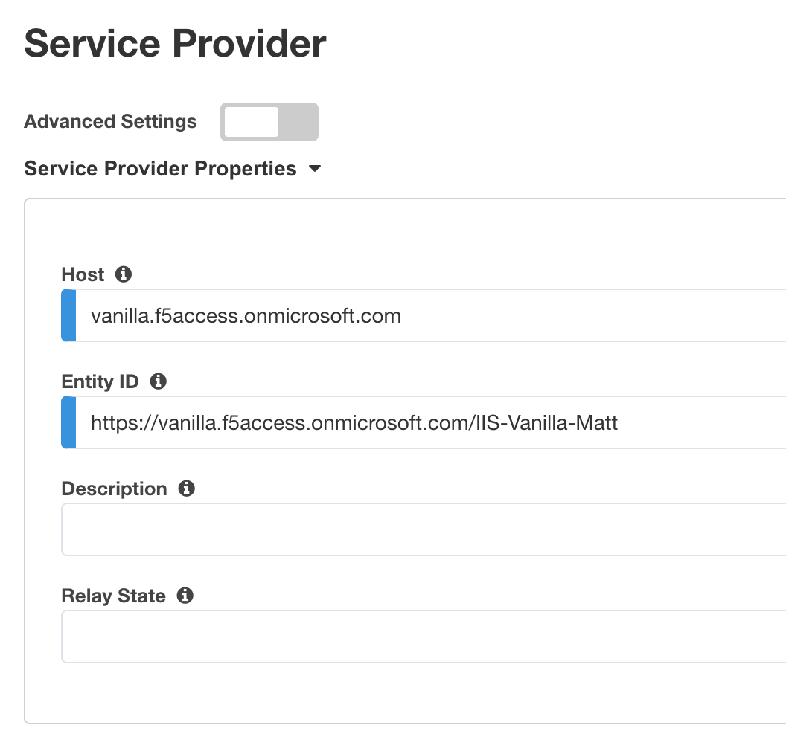
Click
Save & Next
Task 4 - Azure Active Directory¶
Select
Azure BIG-IP APM Azure AD...templateNote
As you can notice, there are several templates available for different applications. Here, in this lab, we will publish a generic app. So we select the first template.
Click
AddIn the new screen, configure as below.
Signing Key :
default.keySigning Certificate :
default.crtSigning Key Passphrase :
F5twister$
In
User And User Groups, clickAddNote
We have to assign Azure AD users/group to this app, so that they can be allowed to connect to it.
In the list, click
Addfor the useruser1. If you can’t find it, search for it in thesearchfield.
Click
CloseYou can see
user1in the list.
Click
Save & Next
Task 5 - Virtual Server Properties¶
Configure the VS as below
IP address :
10.1.10.103ClientSSLprofile. We will get a TLS warning in the browser, but it does not matter for this lab.
Click
Save & Next
Task 6 - Pool Properties¶
Select
Create NewIn Pool Servers, select
/Common/10.1.20.9This is the IIS server.
Task 7 - Single Sign-On Settings¶
In
Selected Single Sign-on Type, selectKerberos, and selectAdvanced Settings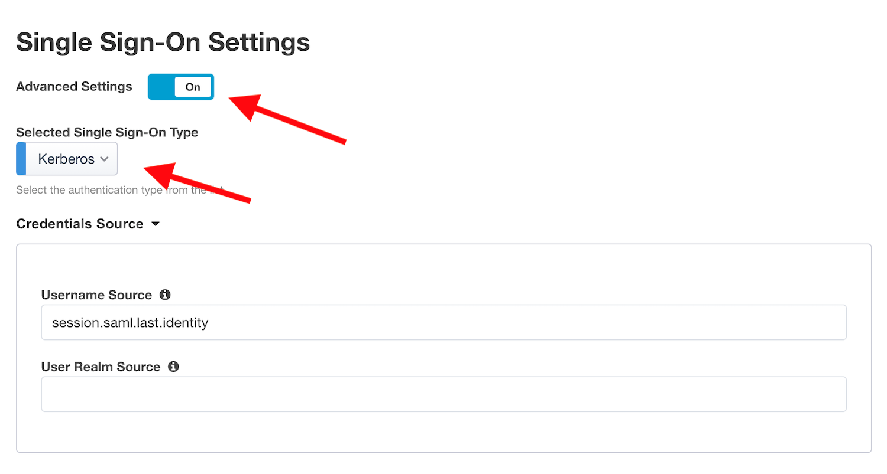
In
Credentials Source, fill as below- Username Source :
session.saml.last.identity - Delete User Realm Source value - keep it empty. The domain is similar between Azure AD and on-prems AD.
- Username Source :
In
SSO Method Configuration, fill as below- Kerberos Realm :
f5access.onmicrosoft.com - Account name :
host/apm-deleg.f5access.onmicrosoft.com - Account Password :
F5twister$ - KDC :
10.1.20.8 - UPN Support :
Enaled - SPN Pattern :
HTTP/%s@f5access.onmicrosoft.com

- Kerberos Realm :
Click
Save & Next
Task 8 - Session Management Properties¶
- Nothing to change, click
Save & Next
Task 9 - Deploy your app template¶
Click
Deploy
Behind the scene, the deployment creates an
Azure Enterprise ApplicationforBluesky. We can see it inAzure portal(you don’t have access in this lab). With this Enterprise Application, Azure knows where to redirect you when authenticated. And this app has the certificate and key used to sign the SAML assertion.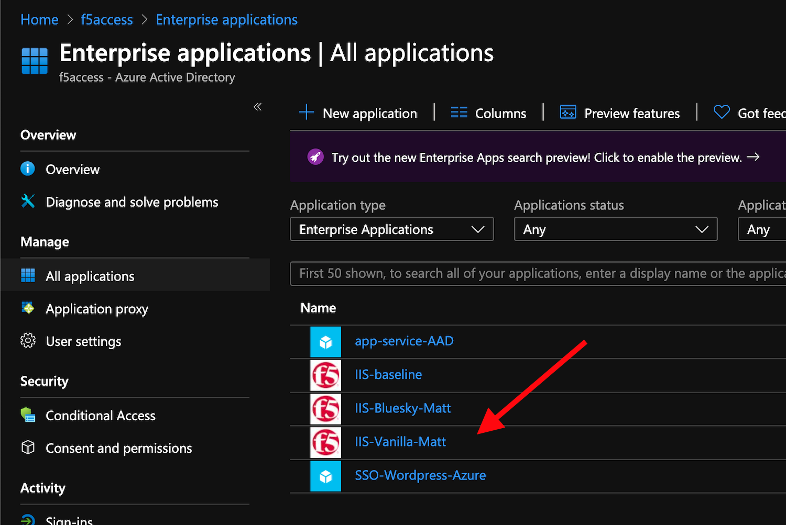
Task 10 - Test your deployment¶
RDP to Win10 machine as
userand passworduserOpen
Microsoft Edgebrowser - icon is on the DesktopClick on the
bookmarkVanillaYou will be redirected to Azure AD login page - only if your previous session with
Blueskyexpired in APM. Login asuser1@f5access.onmicrosoft.com, and for the password please ask to your instructor (if you are prompted). But as you already authenticated against Azure AD, you still have a session in Azure AD.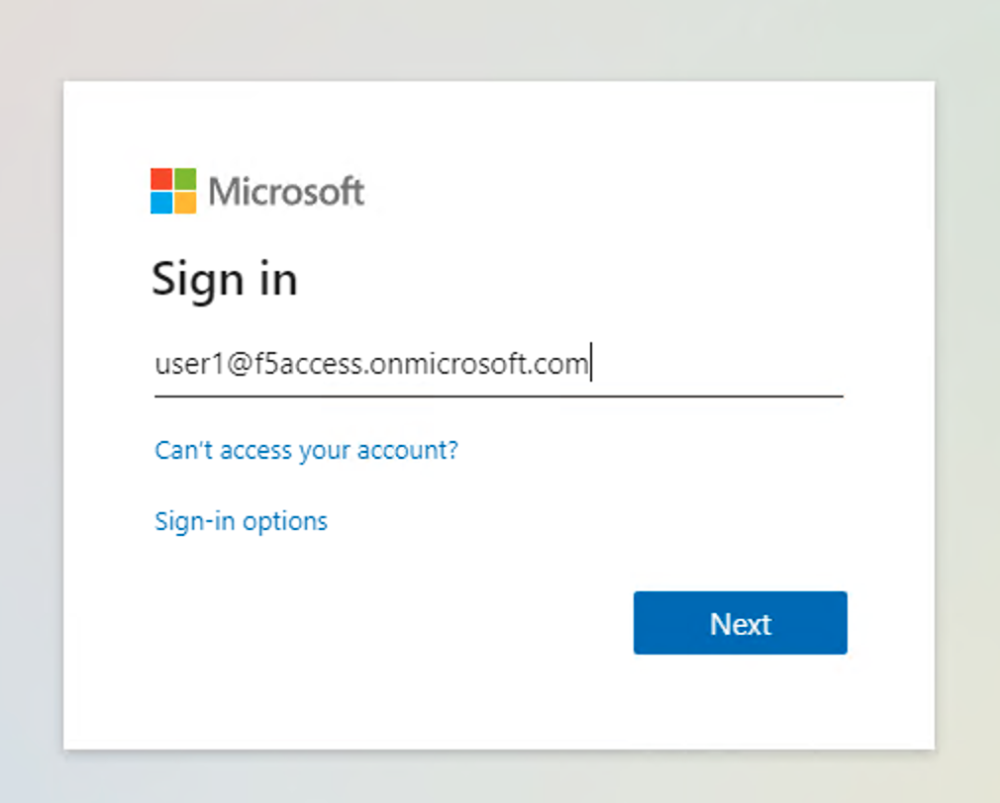
You are redirected to APM with a SAML assertion, and can access to Vanilla application.
APM did
Single Sign-onwith Vanilla application (Kerberos Constrained Delegation)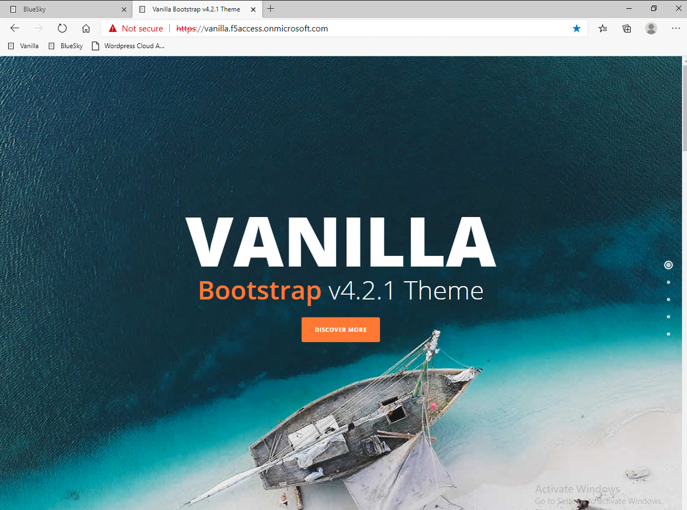
Click
Blueskybookmark, you can accessBlueskyapplication as well.Extra lab, enable
Inspect modein Edge, and follow the SAML redirections to understand the workflow.
Section 1.4 - Leverage Azure AD to protect Cloud Apps¶
In this lab, we will check that user1 can access any cloud app federated with Azure AD.
In a real world, companies deploy applications on-prems and in public clouds. If the company uses Azure AD as IDaaS, it will federate all cloud apps with this Azure AD tenant.
This is what we prepared for you in this lab. This application is federated with our Azure AD tenant.
You have nothing to configure on APM side, as everything is dealed between the cloud app and Azure AD. In Azure portal, we configured Oauth for the cloud app, so that every user reaching this app will be redirected to Azure login page.

RDP to Win10 machine as
userand passworduserOpen
Microsoft Edgebrowser - icon is on the DesktopClick on the
bookmarkWordpress Cloud AppYou will be redirected to Azure AD login page (it can take a while - look at the address bar). Login as
user1@f5access.onmicrosoft.com, and for the password please ask to the instructor (if prompted). You already have a session up and running in Azure AD, from previous class.You are redirected to the
cloud appin Azure cloud, and can access to Wordpress-UDF application.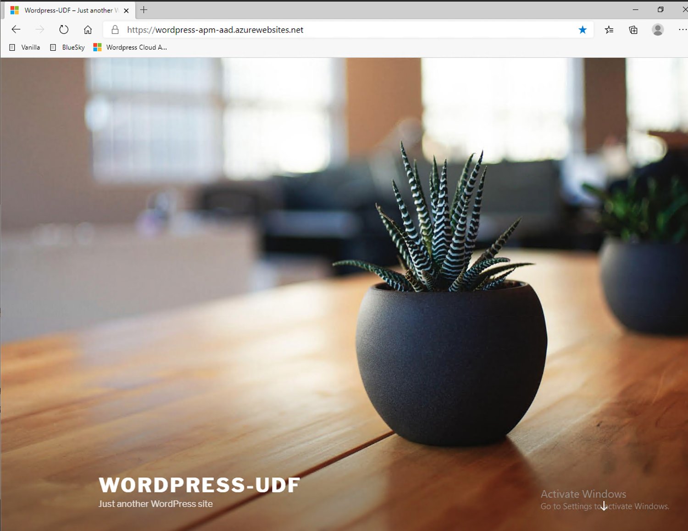
Section 1.5 - Clean up the Lab¶
Warning
In order to keep the Azure AD tenant clean, it is important you delete your application in Guided Configuration, when your demo is finished.
In Guided Configuration menu, click on the
Undeployicon, thenOK
When finished, click on
Deleteicon
Note
Thanks a lot, you cleaned up your config on both sides (APM and AAD). FYI, all old deployments will be deleted automatically in Azure AD.